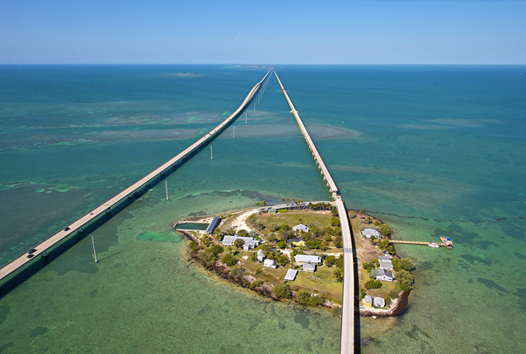
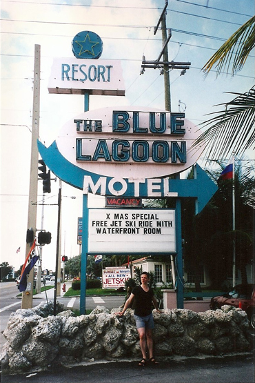
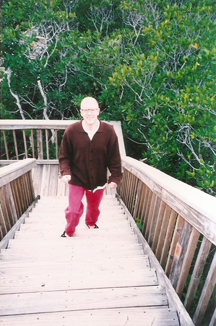
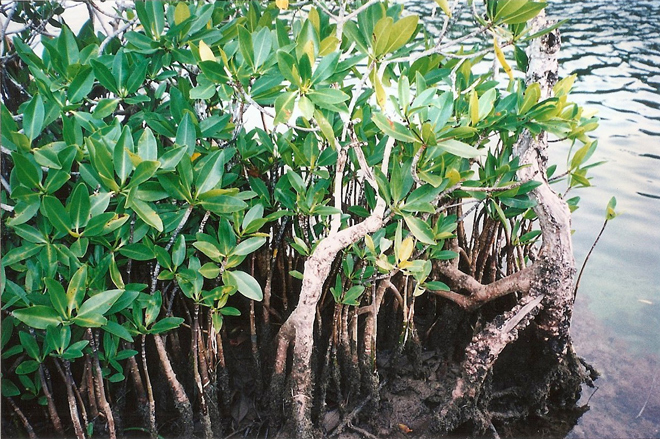
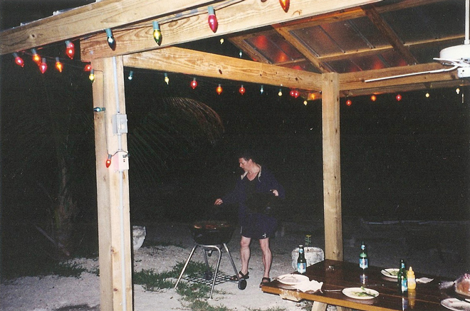
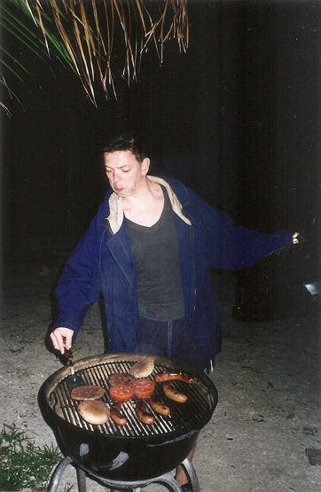

Driving back north from Key West, we saw the full aspect of the Florida Keys, a coral cay archipelago forming the southernmost part of the continental United States.
One of the longest bridges when it was built, the Seven Mile Bridge, connects Knight's Key (part of the city of Marathon in the Middle Keys) to Little Duck Key in the Lower Keys. The piling-supported concrete bridge is 6.79 miles (10.93 km) long. The current bridge bypasses Pigeon Key (above) a small island that housed workers building Florida's East Coast Railway in the 1900s, that the original Seven Mile Bridge crossed. A short section of the old bridge remains for access to the island, although it was subsequently closed to vehicular traffic in 2008.




Despite this being a tourist destination we found very few restaurants of any significant quality and had to resort to cooking our own food on a BBQ at our motel. Neither of us I think would make it to the final of Master Chef on the basis of this particular meal ...
